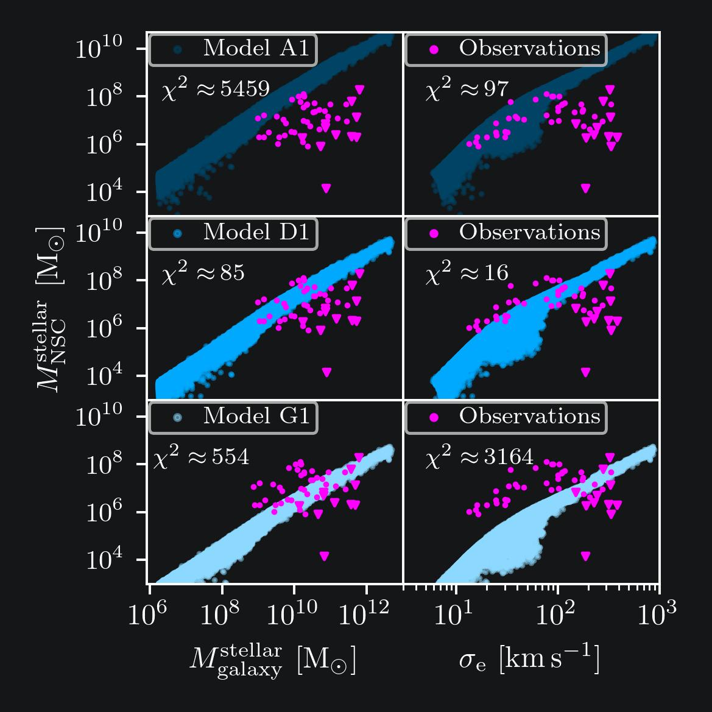
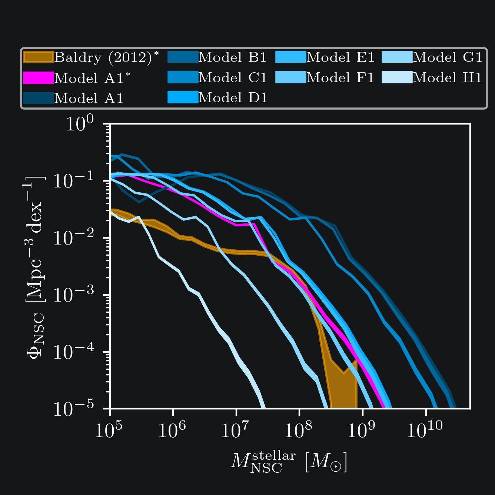
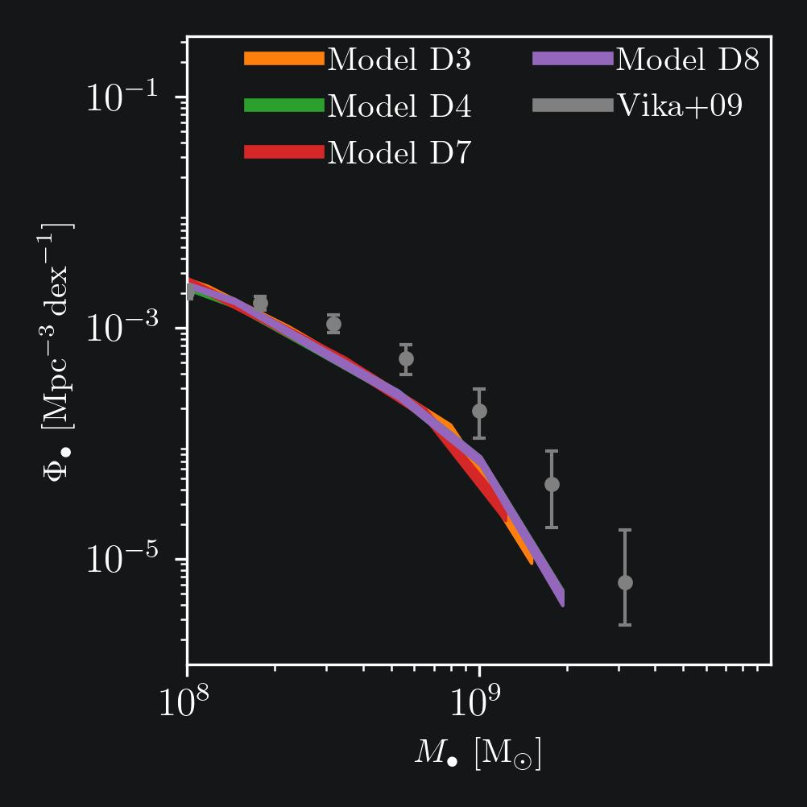
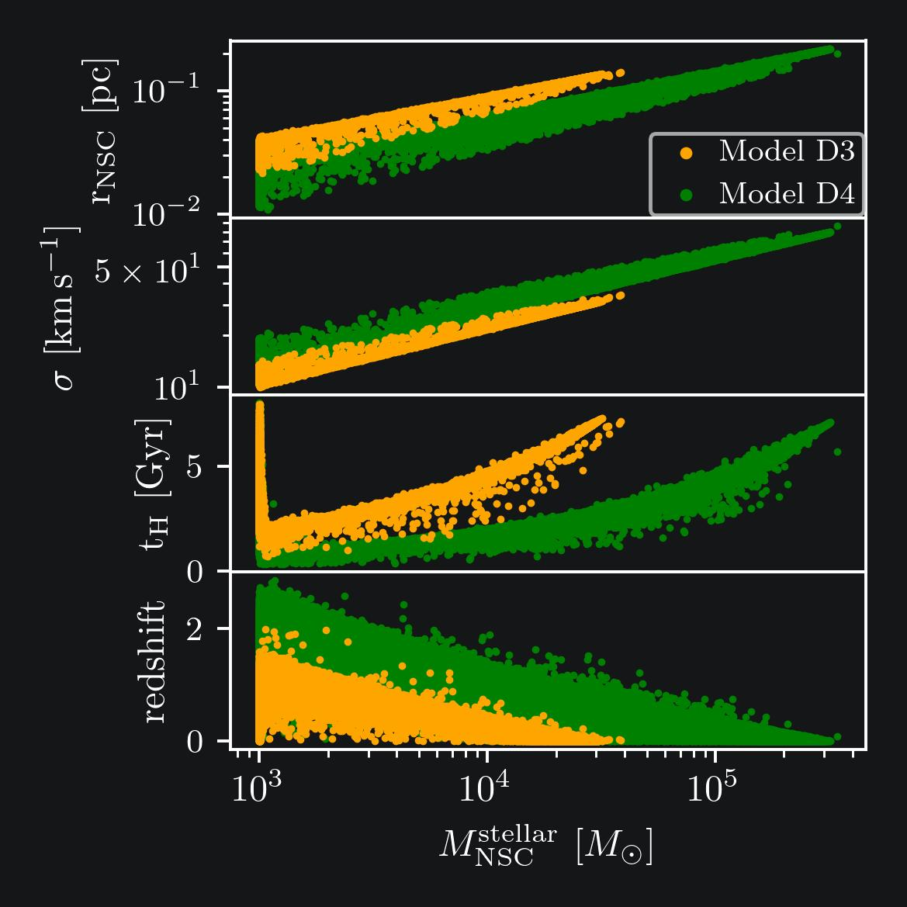

I obtained both my Bachelor's and Master's degrees in Astronomy from the Universidad de Concepción. I began my undergraduate studies in 2018, where I built a strong foundation in astrophysics and observational techniques. After completing my Bachelor's degree, I pursued a Master's program, which I successfully finished in January 2024.
Throughout my academic journey, I actively engaged with the international scientific community, presenting my research at international conferences:
XVII Latin American Regional IAU Meeting (LARIM), Uruguay, 2023
65th Annual Meeting of the Asociación Argentina de Astronomía (AAA), Argentina, 2023
XVIII SOCHIAS Meeting, Chile, 2022
At these events, I contributed through posters and oral presentations, showcasing my research.
In addition to my academic studies, I gained invaluable hands-on experience through internships and research visits to prestigious institutions:
Internship at Carnegie Observatories, Pasadena, California, USA (14 April–15 March 2023)
Research visit to SISSA, Trieste, Italy (30 September–7 October 2023)
Research visit to Max-Planck-Institut für Astronomie, Heidelberg, Germany (9–27 October 2023)
These experiences provided me with exposure to cutting-edge research environments, and computational methodologies.
I have also contributed to teaching and outreach activities during my studies. I participated in tutoring sessions, where I supported undergraduate and graduate students by mentoring and guiding them through challenging coursework. These experiences honed my communication skills and deepened my commitment to education and scientific dissemination.
Currently, I am on a new chapter in my academic career as a PhD student at Sapienza University of Rome. This opportunity was made possible by a prestigious fellowship awarded by ANID Chile.
Research
My research focuses on the formation and growth of supermassive black holes within nuclear star clusters, employing semi-analytical techniques to explore these processes. This work leverages the Galacticus semi-analytic model, which provides a comprehensive framework for simulating galaxy formation and evolution. A thorough understanding of galaxy formation is essential for accurately modeling the environments that foster the growth of supermassive black holes, including the interplay of star clusters, gas dynamics, and dark matter halos.
Theoretical and computational astronomy Tutoring, Universidad de Concepción, July-November, 2024.
Cosmology Tutoring, Universidad de Concepción, March-July, 2024.
Cosmology Tutoring, Universidad de Concepción, March-August, 2023.
Stellar astrophysics Tutoring, Universidad de Concepción, August-December, 2023
Conferences
Advancing massive black hole modelling across galactic scales. Helsinky, Finland
Talk entitled: "Semi-Analytic Prescriptions for Black Hole Seeding in Nuclear Star Clusters" in the three day workshop held in Helsinky, Finland, from 28–30 July 2025 in the City Centre Campus of the University of Helsinki.
Slides can be found here.
Bridging scales: star clusters and their host galaxies from the Local to the high-z Universe Matera, Italy
Poster entitled: "The SMBH population from seeding via collisions in NSCs at z=0" in the five-day conference, from 1–5 September 2025 in Matera.
The aim of this poster is to present the results of the population of supermassive black holes seeded via collisions in nuclear star clusters at redshift zero, using the Galacticus semi-analytical model.
Galacticus, as a semi-analytical model, provides a framework for simulating a large sample of galaxies using approximations for the physical proceses that describe the galaxy formation and evolution.
In this work, we focus on the formation of supermassive black holes (SMBHs) in nuclear star clusters (NSCs) through collisions, which are a key mechanism for seeding SMBHs in dense stellar environments.
In-situ model
We use the in-situ model of NSC formation, which is based on the assumption that NSCs form from the gas inflow into a nuclear reservoir.
The gas inflow, assumed to be correlated to the star formation rate of the spheroid, is regulated by the efficiency of the gas reservoir (\(A_{\rm reservoir}\)),
which determines how much gas can be accreted onto the NSC. The gas inflow rate is given by
\(\dot{M}_{\rm gas}^{\rm NSC}=A_{\rm reservoir}\dot{M}_{\rm stellar}^{\rm spheroid}\),
where \(\dot{M}_{\rm stellar}^{\rm spheroid}\) is the star formation rate of the spheroid.
The star formation rate is calculated assuming a Krumholz+09 rule, i.e,
\(\dot{M}_{\rm stellar}^{\rm NSC}=f_{\rm c} \frac{M_{\rm gas}^{\rm NSC}}{t_{\rm SF}}\),
where \(f_{\rm c}\) is the cold gas fraction which depends on the metaliicity, \(M_{\rm gas}^{\rm NSC}\) is the gas in the nuclear reservoir, and \(t_{\rm SF}\) is the star formation timescale, which is given by

Figure 1: Left panels show the NSC stellar mass as function of the stellar mass of the host galaxy for diferent values of \(A_{\rm reservoir}\) listed in Table 1.
Right panels show the stellar mass of the NSC as a function of the velocity dispersion of the host galaxy. We have included data from observations (magenta), triangles represent upper limits. The Chi-square test value is also shown.
Model
\( A_{\rm reservoir} \)
A1
10-1
D1
10-2
G1
10-3
Table 1: Model parameters for different efficiencies (\(A_{\rm reservoir}\)) of the gas inflow into the nuclear reservoir.

Figure 2:
NSC mass function for different values of \(A_{\rm reservoir}\) listed in Table 2. We include a derived mass function from the Baldry+12 galaxy (orange)
mass function assuming a 100% of NSC fraction occupation and \( M_{\rm stellar}^{\rm NSC} = 10^{-3} M_{\rm stellar}^{\rm galaxy}\). We have repeated the experiment with model A1 (magenta line),
assuming that all the galaxies have a NSC that scales with the stellar mass of the host galaxy.
Model
\( A_{\rm reservoir} \)
A1
1x10-1
B1
9x10-2
C1
5x10-2
D1
1x10-2
E1
9x10-3
F1
5x10-3
G1
1x10-3
H1
1x10-4
Table 2: Model parameters for different efficiencies (\(A_{\rm reservoir}\)) of the gas inflow into the nuclear reservoir.

Figure 4: SMBH population seeded via collisions in NSCs at z=0.
Model
\( \epsilon_r \)
\( M_{\rm min}^{\rm NSC} \) \([{\rm M}_\odot]\)
D3
0.2
103
D4
0.1
103
D7
0.2
104
D8
0.1
104
Table 1: Model parameters for the SMBH population seeded via collisions in NSCs at z=0.
Models D1, D2, D5 and D6 are not shown here, as they do not form any black hole seed.

Contact
Email: gonzalez.liempi [at] uniroma1.it
Address: Sapienza, Università Di Roma
p.le Aldo Moro 2
Roma, Italy